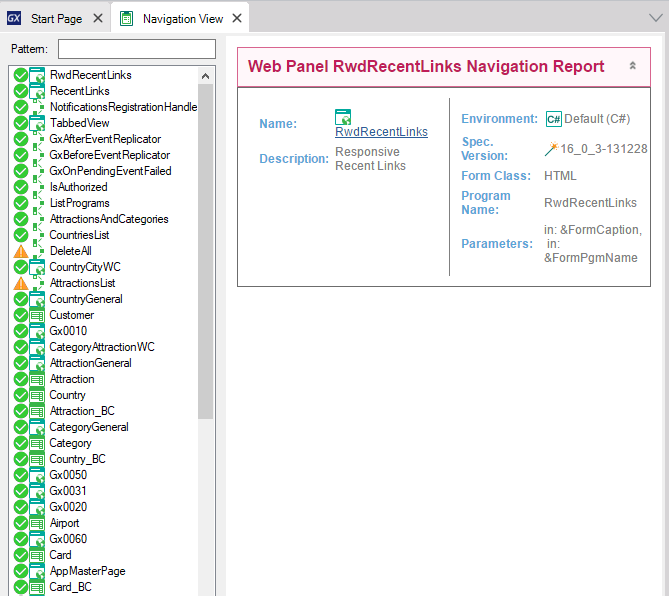

Displays the last Navigation Report saved.

You can open it by selecting in the main GeneXus Menu: View > Last Navigation.
View Navigation object option View Last Navigation object option Specify and Generate Navigation Report for Transactions Navigation Reports for Procedures, Web Panels and Data Providers